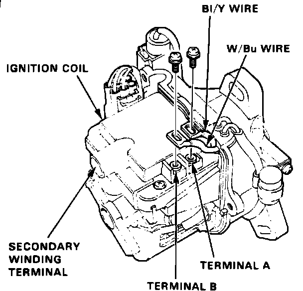

Ignition Coil: Testing and Inspection
Ignition Coil Test:

IGNITION COIL
INTEGRA
Test should be performed with coil at room temperature.
1. With ignition switch off, remove distributor cap.
2. Remove two screws to disconnect the black/yellow and white/blue wires from terminals A and B, respectively, Fig. 1.
3. Using a suitable ohmmeter, measure resistance between terminals. Primary winding resistance (between terminals A and B) should be .3-.5 ohms. Secondary winding resistance (between terminal A and the secondary winding terminal) should be 9.44-14.16 ohms.
4. Replace coil if resistance is not within specifications.